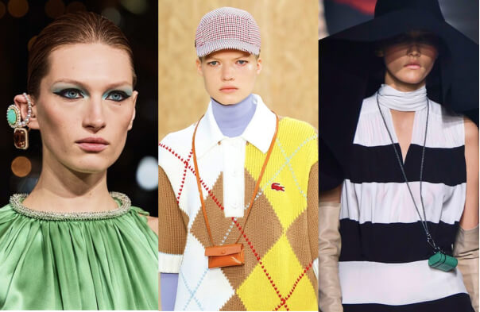
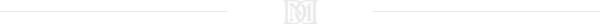
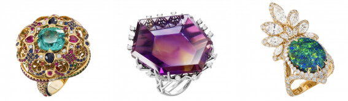

|
5 ювелирных трендов
осени и зимы
Следуем не только моде, но и здравому смыслу

Модные показы в Милане, Париже, Лондоне и Нью-Йорке задали для сезона осень - зима новые тренды. Конечно,
это коснулось и украшений: асимметричные формы, многослойность и яркость - главные характеристики новой моды.
Гигантские моносерьги, несколько колье, надетые каскадом, цепи, микросумки в качестве кулонов и другие идеи,
которые не всем придутся по вкусу.

#1 Цветные камни
В этом сезоне актуальность обрели крупные цветные камни. Серьги, кольца, подвески - чем больше цвета, тем лучше.
#2 Массивные колье
Цветные камни пришли на вершину моды вместе с давними традициями литотерапии (лечение камнями) и магическими свойствами.
Лучше всего это отражают ультрамодные колье, по форме напоминающие защитные талисманы и амулеты
#3 Жемчуг
Жемчуг - вечная классика, он актуален всегда, но в этом сезоне его должно быть особенно много. Мы предлагаем выбирать украшения с крупным барочным жемчугом.
#4 Фауна
Анималистический дизайн был актуален уже не один сезон, но осенью мода пошла дальше - теперь популярны изделия в форме самих животных
#5 Фантазийные формы
Все необычное, запоминающееся или даже сюрреалистичное - как никогда популярно осенью и зимой 2020 и 2021 года. Можно смело сочетать несочетаемое.
Но если Вы, как и мы, предпочитаете классику, то элегантным решением станут украшения фантазийных форм от ювелирного дома Maxim Demidov.

Ищете вдохновение для создания яркого образа? Возможно, Вам понравится наша новая статья о камне спессартине!
|